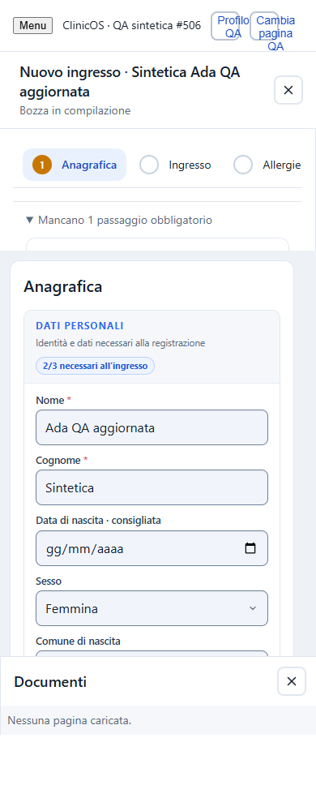
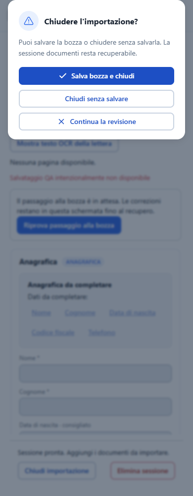

Source 8075cdb61bb329ea56943a0199edc64f67146981; fresh Windows Chromium149.0.7827.55. This companion report is generated from the actual assertion runner JSON; it is not a Playwright Test reporter export.
Actual React components and production CSS; synthetic localhost fixtures only. No backend/OCR/provider or online deployment certification.
| Viewport | Result | Evidence |
|---|---|---|
| 1440 | PASS; zero unexpected console/HTTP errors; save and reload assertions passed | trace video resumed draft |
| 1024 | PASS; zero unexpected console/HTTP errors; save and reload assertions passed | trace video resumed draft |
| 768 | PASS; zero unexpected console/HTTP errors; save and reload assertions passed | trace video resumed draft |
| 390 | PASS; zero unexpected console/HTTP errors; save and reload assertions passed | trace video resumed draft |

